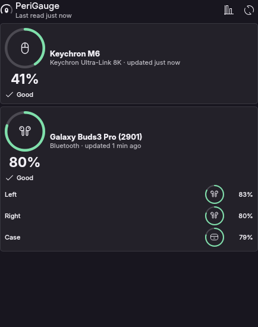

Your mouse, keyboard and headphone battery, right in your panel.
PeriGauge shows a meter for each device in the panel, on the desktop and in a popup, and warns you before they run out. Choose circular gauges or bars, including left bud, right bud and case. Disconnected devices are hidden by default. A single Rust binary, fully local: no Solaar, no network, no telemetry.

How states are shown
- Good
- Low
- Critical
- Charging
- Stale reading
Devices
What works today, and with what evidence
We separate what was tested on hardware from what is still in development. No device is listed as supported without its evidence level.
| Device | Connection | Backend | Evidence | Notes |
|---|---|---|---|---|
| Keychron M6 | Keychron Ultra-Link 8K receiver | Vendor HID protocol | Verified on hardware | Read from a real M6 through the Ultra-Link 8K receiver. |
| Logitech MX Keys | Bluetooth | Direct HID++ 2.0 (no Solaar) | Verified on hardware | Battery reading verified over Bluetooth with direct HID++, no Solaar. Charging cycles and notifications on this keyboard are not yet verified. |
| Logitech MX Keys | Unifying receiver | Direct HID++ 2.0 (no Solaar) | In development | Fixture-based tests; hardware pending. |
| Logitech MX Master 3S | Bolt receiver or Bluetooth | Direct HID++ 2.0 (no Solaar) | In development | Fixture-based tests; hardware pending. |
| Samsung Galaxy Buds3 Pro | Bluetooth | Samsung SPP protocol | Verified on hardware | Battery readings and updates verified over Bluetooth on a real device: left bud, right bud and case, when reported by the device. |
| Any device UPower/BlueZ already reports | Bluetooth / USB | UPower and BlueZ (kernel power_supply, BLE Battery Service, HFP) | Generic / expected | Depends on what the device reports; not a per-model guarantee. |
Full details, including data read, in COMPATIBILITY.md.
Notifications
Warns at the right time, without nagging.
Four thresholds, delivered through the desktop notification server.
- 20%
Warning
Warning Battery is low.
- 10%
Critical
Critical Time to charge.
- 5%
Shutting down
Critical The device is about to power off.
- 100%
Charged
Charged Notifies when it reaches 100%.
Hysteresis
Hysteresis keeps the same alert from repeating on every reading.
Never on a stale reading
A stale reading or a voltage-estimated percentage never alerts; the state shows as “Stale reading”. When a device only reports an approximate level, the alert follows the device itself (low/critical).
Do not disturb
It uses the desktop notification server, so “do not disturb” mode is respected.
Privacy
Local by default, for real.
PeriGauge only talks to your devices and to your desktop.
No network
No network use: everything happens on your machine.
No telemetry
No usage metrics are collected or sent.
No Solaar
Logitech support uses direct HID++ 2.0, with no Solaar dependency.
User daemon
One binary,
perigauge, running as asystemd --userservice, no root.
Install
Install (pre-alpha)
Binary for Linux x86_64 with glibc 2.39 or newer, tested on Ubuntu 26.04 with KDE Plasma 6. Check the checksum and dry-run before installing; everything goes to your user, no sudo. To build from source, see the README.
# download the release and check the checksum
curl -LO https://github.com/caiolombello/perigauge/releases/download/v0.1.0-alpha.3/perigauge-0.1.0-alpha.3-x86_64-linux.tar.gz
curl -LO https://github.com/caiolombello/perigauge/releases/download/v0.1.0-alpha.3/SHA256SUMS
sha256sum -c SHA256SUMS
tar xf perigauge-0.1.0-alpha.3-x86_64-linux.tar.gz
cd perigauge-0.1.0-alpha.3
# dry-run; then install with the notification service
./install.sh --dry-run
./install.sh --enable-serviceRoot-less HID access needs a udev rule. It is an explicit, separate step that uses sudo, documented in the repository; the installer never runs it on its own.
Roadmap
What comes next
0.1.0-alpha.3
Disconnected devices hidden by default and MX Keys battery reading verified over Bluetooth. Published October 2026.
KDE Plasma 6 plasmoid
Always-visible batteries in the panel and on the desktop; popup follows the panel style.
GNOME Shell extension
Planned for after the plasmoid.
More devices
More peripherals as hardware is available to verify. Each with its own evidence level.